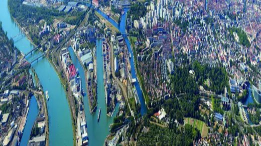

2CRSi's Aether gambit: a former GM factory in Strasbourg becomes Europe's largest AI-infrastructure site
French server manufacturer 2CRSi announced on October 12 that Aether Infrastructures has signed a preliminary agreement to acquire the 90-hectare Dumarey Powerglide factory in Strasbourg's Port du Rhin district — the opening move in a project the company presents as Europe's largest industrial site dedicated to AI infrastructure.
French server manufacturer 2CRSi announced on October 12 that Aether Infrastructures has signed a preliminary sale agreement for the Dumarey Powerglide industrial site in Strasbourg, a 90-hectare complex once home to Punch Powerglide and General Motors. The site, codenamed FR-SXB2, is to be reborn as an integrated industrial hub for artificial intelligence — billed by the company as the largest of its kind in Europe.
The signing, dated Friday October 9, was disclosed through a French regulatory press release carried by EQS Group on October 12. A lease signed in parallel lets the project occupy available areas of the site from October 15 to begin first-stage works.
Three pillars, one campus
The ÆTHER project plans to convert roughly 90 hectares — including about 110,000 square meters of existing buildings — into an "Industry 5.0" ecosystem built around three pillars: Aether Compute, which will operate the AI Factory; Aether Facilities, managing the campus and its infrastructure; and Aether Utilities, producing and distributing decarbonized energy on site, including biomass-based generation.
Energy is central to the pitch: the project targets a net-negative carbon footprint through biochar production, with partners including Nhood for site management and ÉS for energy. The model the release sketches is "sovereign, responsible and sustainable" AI — computed, manufactured, and powered on the same plot.

The €1 billion pitch
2CRSi, an Euronext-listed founding member of the consortium, is its designated server supplier. The company estimates that deploying the first compute capacities over the 2026–2027 fiscal year represents revenue potential above €1 billion — while flagging the usual caveats: supply or permitting delays could push deliveries beyond its June 2027 fiscal year-end.
Beyond selling servers, 2CRSi plans to use the site to relocalize value-added production for its GODì server line: first integrating key components — processors, DRAM memory, SSD storage — on site, then manufacturing its own motherboards in a second phase.
Why it matters
The announcement lands as Europe scrambles to secure sovereign compute. The EU's AI Factories initiative has been placing large-scale capacity across member states, and France has been among the most aggressive bidders. ÆTHER's differentiator is vertical integration: most AI Factories buy chips and rent power; this one would build the servers and generate its own energy on the same campus.
The risks are the usual ones for gigascale builds: permitting timelines, biomass energy delivery at scale, and whether €1 billion of server demand materializes on a twelve-month clock. A lease-then-buy structure de-risks the start, but the path from promesse de vente to a running AI Factory is long. Watch the October 15 site handover and the first concrete construction milestones for the early signal.